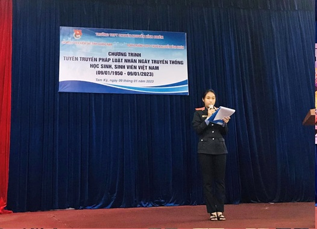
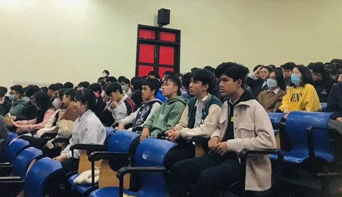
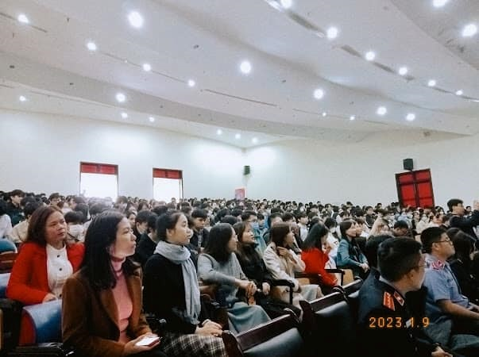

CHƯƠNG TRÌNH “TUYÊN TRUYỀN PHÁP LUẬT” VỀ MA TUÝ VÀ CÁC LOẠI THUỐC LÁ MỚI (10/01/2023)

Viết bởi Administrator Thứ ba, 10 Tháng 1 2023 19:47
CHƯƠNG TRÌNH “TUYÊN TRUYỀN PHÁP LUẬT” VỀ MA TUÝ VÀ CÁC LOẠI THUỐC LÁ MỚI (10/01/2023)
Sáng ngày 09/01/2023, nhân ngày Truyền thống Học sinh - Sinh viên (09/01/1950 -09/01/2023), Ban Chấp hành Đoàn Trường phối hợp cùng Chi đoàn Viện kiểm sát Tỉnh Quảng Nam tổ chức Chương trình "Tuyên truyền pháp luật" về ma tuý và các loại thuốc lá mới.



Thông qua buổi tuyên truyền, các bạn đoàn viên, thanh niên đã có thêm nhiều hiểu biết về ma tuý và một số loại thuốc lá mới xuất hiện trong thời gian vừa qua, từ đó nhận thức và tránh xa các tệ nạn xã hội.
Tin mới hơn:
- 15/02/2023 19:22 - CÁC CLB THỂ THAO THAM GIA THI ĐẤU TẠI CÁC GIẢI THỂ…
- 20/01/2023 20:19 - CHIẾN DỊCH XUÂN TÌNH NGUYỆN NBK 2023
- 17/01/2023 23:25 - CUỘC THI TÌM KIẾM TÀI NĂNG ÂM NHẠC – NBK’STAR
- 15/01/2023 22:18 - "QUẢ NGỌT" TỪ PHONG TRÀO “SÁNG TẠO TRẺ”
- 14/01/2023 21:12 - CHIẾN DỊCH XANH “NÓI KHÔNG VỚI RÁC THẢI NHỰA
Tin cũ hơn:
- 09/01/2023 17:31 - CLB Từ Thiện NBK – chiến dịch tình nguyện Xuân
- 22/12/2022 20:30 - HỘI THI RUNG CHUÔNG VÀNG KỈ NIỆM NGÀY THÀNH LẬP QU…
- 14/12/2022 22:53 - CHỦ NHẬT XANH
- 26/11/2022 20:17 - KẾT NỐI CÁC TRƯỜNG ĐẠI HỌC NƯỚC NGOÀI – CƠ HỘI DU …
- 19/11/2022 19:16 - CHI ĐOÀN GIÁO VIÊN VỚI HỘI THI GIÁO VIÊN GIỎI (19/…